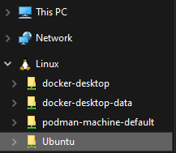

Getting started with the analyze-deployment-tooling repository
You can run the code in the analyze-deployment-tooling repository on Windows with Windows Subsystem for Linux, and on macOS.
Prerequisites
The repository code requires an internet connection in order to download other requirements. To use the repository from a location without an internet connection, you must download the requirements before you move to an offline system. For more information, see External dependencies.
Windows Subsystem for Linux (WSL)
If you are on Windows, you must use WSL 2 as the backend for Docker and to run the shell scripts in this repository.
In an Administrator command prompt, run the following command:
wsl --installRestart your workstation to complete the installation.
- After you restart, open the distribution. Click Start > WSL.
- You will be asked to create a username and password for the Linux distribution.
For more information, see Set up your Linux username and password. Verify that you can access the WSL file system from Windows Explorer. In the address bar, you can use
\\wsl.localhost\Ubuntu. Additionally, the file system appears in the Quick Access Toolbar. For example:
Docker
The containerized environment requires Docker to run the containers. The following steps describe how to install Docker Desktop on your operating system:
Install Docker Desktop for your operating system. For more information about installing Docker Desktop, see https://docs.docker.com/engine/install/#desktop.
- Windows: Docker Desktop WSL 2 backend on Windows
- macOS: Install Docker Desktop on Mac
After you install Docker, allocate at least 5GB of memory to Docker to run the containers in the example deployment.
On Windows, Docker is automatically allocated 8GB or 50% of available memory (whichever is less).
For more information about modifying the resources allocated to Docker, see:
Note: Consider enabling Resource Saver in Docker Desktop settings to reduce CPU and memory use. Additionally, to reduce memory use in WSL, i2 recommends using WSL's
autoMemoryReclaimfeature.
Keep Docker Desktop up to date as you use your system, to ensure that you receive stability, feature, and security updates.
Code
You need to download and extract the code in the analyze-deployment-tooling repository:
Download the
.tar.gzfile from https://github.com/i2group/analyze-deployment-tooling/releases/tag/v3.0.3.Extract the
.tar.gzfile:- On Windows, copy the
analyze-deployment-tooling-3.0.3.tar.gzfile to your WSL filesystem. For example:\\wsl.localhost\Ubuntu\home\<user>. Extract the
tar.gzfile (On Windows, run these commands from a WSL terminal. Start > WSL):cd /home/<user>tar -xzf analyze-deployment-tooling-3.0.3.tar.gzmv analyze-deployment-tooling-3.0.3/ analyze-deployment-tooling
- On Windows, copy the
i2 Analyze minimal toolkit
To download the i2 Analyze minimal toolkit, you must request it from the i2 support team:
- Download the i2 Analyze 4.4.4 minimal toolkit for Linux.
- Follow the procedure described in Where can I download the latest i2 Products?
- Populate the subject of the form with Request for i2 Analyze 4.4.4 minimal toolkit for Linux.
- When you have the minimal toolkit, rename the
i2analyzeMinimal_444.tar.gzfile toi2analyzeMinimal.tar.gz, and then copy it to theanalyze-deployment-tooling/pre-reqsdirectory.
Notes:
- If you used the
analyze-deployment-toolingrepository with a previous version of i2 Analyze, overwrite the existing minimal toolkit. - To deploy a fix pack, download the minimal toolkit version of the fix pack and complete Step 2 above.
Analyst's Notebook
Download i2 Analyst's Notebook version 10.
- Follow the procedure described in Where can I download the latest i2 Products?
- Populate the subject of the form with Request for i2 Analyst's Notebook 10.
Install i2 Analyst's Notebook on a Windows workstation.
Notes:
- Ensure that you choose to install i2 Analyze Schema Designer as part of the installation process.
- If you are running Docker on macOS, you can install Analyst's Notebook on a Windows virtual machine.
For more information, see Installing i2 Analyst's Notebook.
Development environment prerequisites
To develop and deploy an i2 Analyze configuration, you need to set up the development environment. Visual Studio Code is used as the IDE, and you must modify your hosts file to connect to a deployment.
On Windows, you can run the install-pre-reqs.bat script to install Visual Studio Code and modify the hosts file. If you are using macOS, you must set up the development environment manually.
Windows prerequisites installation
The process for installing pre-requisites on Windows includes two stages:
Manual Visual Studio Code installation
Download and install Visual Studio Code.
Scripted prerequisites installation
The install-pre-reqs.bat script installs the required extensions and updates your hosts file. The script checks if you already have the prerequisites installed and does not overwrite them.
- Open Windows Explorer.
- Navigate to the
analyze-deployment-toolingdirectory. For example,\\wsl.localhost\Ubuntu\home\<user>\analyze-deployment-tooling. - Right-click the
install-pre-reqs.batfile. - Click Run as administrator.
- Ensure that the script ran successfully by checking the output in the command prompt window.
- Press any key to close the window.
macOS prerequisites installation
On macOS, you must install Visual Studio Code and modify the hosts files yourself.
Install Visual Studio Code
Download and install Visual Studio Code
- After you install Visual Studio Code, add it to your PATH. For more information, see Launching from the command line.
Install the Dev Containers extension.
Modify the macOS hosts file
To enable you to connect to a deployment, the Solr Web UI, the database, and the Prometheus Web UI, update your hosts file to include entries for the containers.
Run the following command to open the macOS
hostsfile:sudo vi /etc/hostsAdd the following lines to your
hostsfile:127.0.0.1 i2analyze.eia 127.0.0.1 postgres.eia 127.0.0.1 prometheus.eia 127.0.0.1 solr1.eia 127.0.0.1 sqlserver.eia
Modify the Windows hosts file
For your Windows virtual machine to connect to i2 Analyze, complete the following:
In macOS, go to Settings > General > Sharing. Click the
ibutton next to File Sharing. Turn on File Sharing and copy the IP address displayed. For example,172.16.100.1.On your Windows virtual machine, open an Administrator Command Prompt and run
Notepad.exe C:\Windows\System32\drivers\etc\hosts.Add the same lines as above to the
hostsfile, but with the identified IP address. For example,172.16.100.1 i2analyze.eia.To ensure that your hosts file is configured correctly, open a command prompt in your virtual machine and run:
ping i2analyze.eia. If you get a successful response, your virtual machine is configured correctly.
Using Visual Studio Code
On Windows, use the following instructions to use WSL.
Press F1 and type
WSL: Connect to WSLand select it.Press F1 (or Cmd+Shift+P in macOS) and type
Dev Containers: Open Folder in Container...and select it. In the file explorer, navigate to youranalyze-deployment-toolingdirectory. For example:/home/<user-name>/analyze-deployment-tooling.
If you are prompted, click Trust Folder & Continue.After the dev container starts, if you are prompted, click Install in the pop-up that is displayed that prompts you to install the recommended VS Code extensions.
Your config dev environment is correctly opened when the following is displayed in the bottom left-hand corner of the VS Code window:
For more information about VS Code dev containers, see Developing in a container.To run the scripts in the analyze-deployment-tooling repository, use the VS Code integrated terminal. To open the integrated terminal, click Terminal > New Terminal.
Install analyze-deployment-tooling
To download all the required images and configure your environment, run:
./bootstrap
This command can take a while to run depending on your internet connection and the speed of your machine.
What to do next
Create and use a development environment to develop an i2 Analyze configuration. For more information, see Configuration development environment.
Create an example pre-production deployment that is used to demonstrate how i2 Analyze can be deployed in a distributed cloud environment. For more information, see Pre-production example environment.
To understand how the containerized environment is created, you can review the documentation that explains the images, containers, tools, and functions: